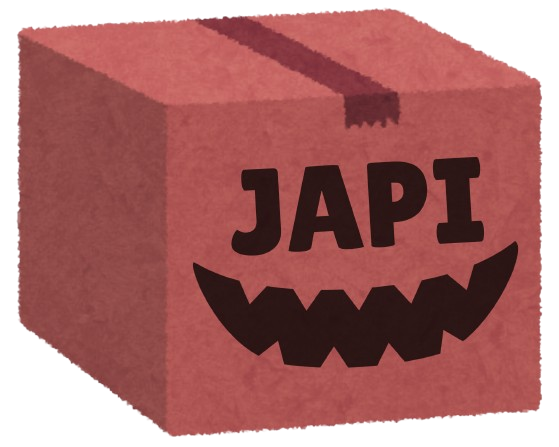
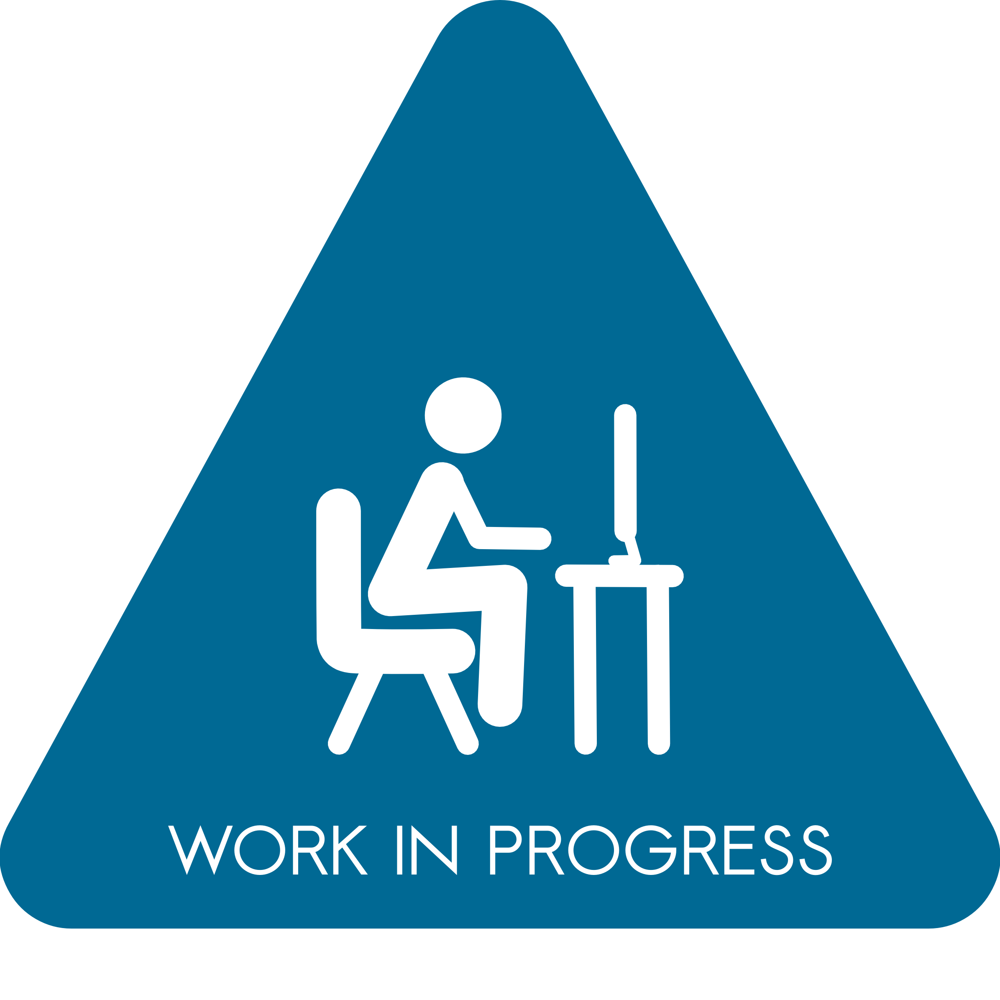
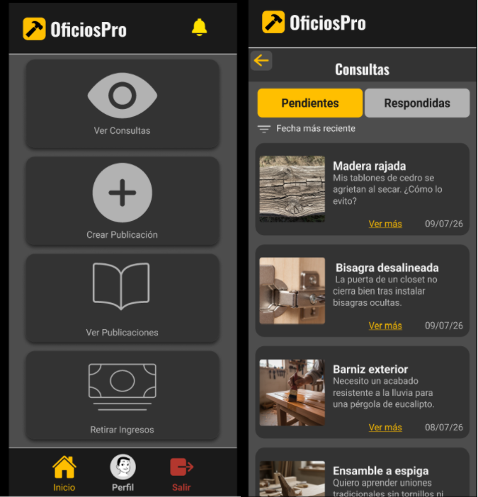
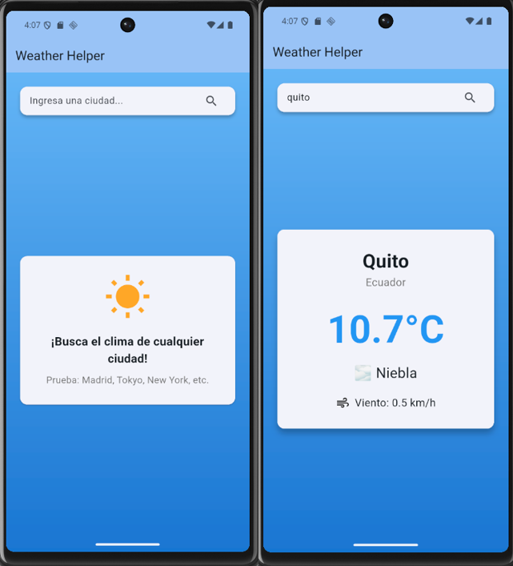
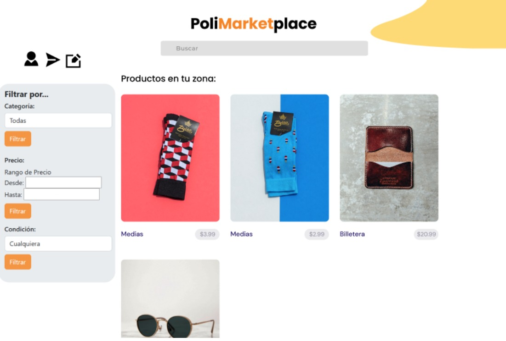
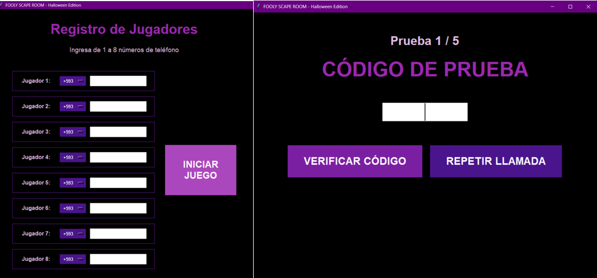

Portafolio
Paúl Dávila
Bienvenido a mi portafolio. Usa las flechas o desliza para navegar.
Proyecto
Katuy Marketplace
Katuy es una plataforma de comercio electrónico que transforma la manera de comprar y vender en Ecuador, brindando a los emprendedores una vitrina digital para dar a conocer sus productos y conectar con miles de clientes a nivel nacional. Desarrollada para el Ministerio de Telecomunicaciones (MINTEL), ahora Ministerio de Infraestructura y Tecnología, con arquitectura full-stack en Next.js y Tailwind CSS, API REST con autenticación JWT, base de datos MySQL y notificaciones en tiempo real mediante Sockets, construida bajo metodología Scrum en sprints iterativos.
Proyecto bajo acuerdo de confidencialidad (NDA) — repositorio no disponible públicamente.

Proyecto
JAPIBOX
JAPIBOX es una plataforma de party games para jugar a distancia con amigos, pensada para llevar la diversión de los juegos de fiesta a cualquier videollamada o reunión virtual. Cuenta con una arquitectura modular donde cada juego se integra mediante contratos definidos (backend, frontend y catálogo) bajo un mismo slug, autenticación con Auth.js (Google y Discord) y modo invitado, y un sistema de datos con Prisma que gestiona roles de usuario, catálogo de juegos y versiones configurables (apto para todo público o +18).
Proyecto privado en desarrollo — próximamente disponible al público.

Proyecto
Luna: Asistente Domótica con IA
Luna es un asistente de voz tipo Alexa construido sobre hardware reutilizado, pensado para dar una segunda vida a equipos en desuso mientras ofrece control domótico inteligente y conversacional en el hogar. Integra Home Assistant para el control de dispositivos (Tuya/Nexxt), un modelo de lenguaje vía DeepSeek API para responder preguntas tipo chatbot además de ejecutar comandos, reproducción de música mediante integración con Spotify, y acceso remoto seguro mediante VPN (Tailscale), todo desplegado en contenedores Docker con una interfaz propia en Next.js con soporte bilingüe (español/inglés).
Ver repositorio en GitHub
Proyecto
Oficios PRO
Solución diseñada con metodología de Diseño Centrado en el Usuario (DCU): investigación con usuarios, sistema de diseño atómico (~20 componentes) y prototipo de alta fidelidad en Figma para conectar maestros de oficios tradicionales con aprendices.
Ver prototipo en Figma
Proyecto
Weather Helper
App móvil desarrollada con Flutter + Dart que permite buscar el clima en distintas ciudades usando la API pública de Open-Meteo (sin API key).
Ver repositorio en GitHub
Proyecto
PoliMarketPlace
Página web hecha con Django que funciona como un marketplace. Muestra artículos en tu zona, permite subir artículos para vender y tiene chat en tiempo real con WebSockets entre compradores y vendedores según el producto.
Ver repositorio en GitHub
Proyecto
Fooly Scape Room
Juego de fiesta inmersivo temático de Halloween desarrollado con Python que usa Twilio para llamar a los celulares de los jugadores y darles acertijos o retos que al completarse revelan un código para pasar a la siguiente ronda.
Ver repositorio en GitHub